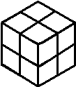
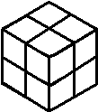
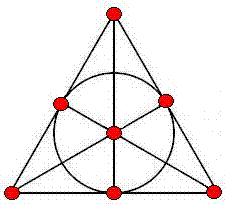
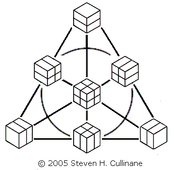
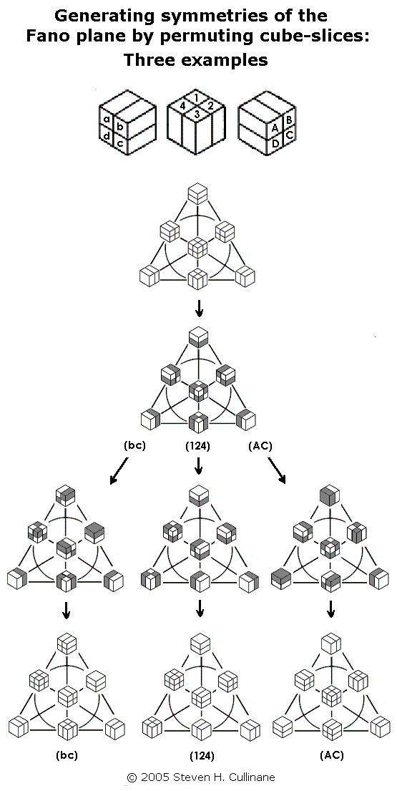
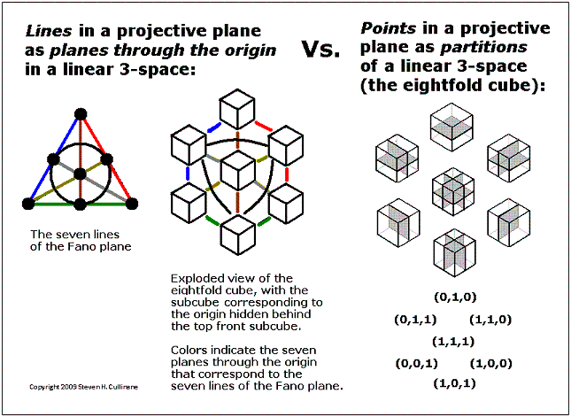

The
Fano Plane Revisualized:

Fig. 1
or, The Eightfold Cube
by Steven H. Cullinane
May 4, 2005 - July 30, 2011

Fig. 1
or, The Eightfold Cube
by Steven H. Cullinane
May 4, 2005 - July 30, 2011
"… the best way to understand a group is to
see it as the group of symmetries of something."
— John Baez, book review, p. 239,
Bulletin of the American Mathematical Society, April 2005
Here is the usual model of the seven
points and seven
lines (including the circle) of the smallest finite projective plane
(the Fano
plane):

Fig. 2
Fig. 2
Every permutation of the
plane's points
that
preserves collinearity is a symmetry
of
the plane. The group
of
symmetries of the Fano plane is of
order 168 and
is isomorphic to the group PSL(2,7)
=
PSL(3,2) = GL(3,2). (See Cameron
on
linear groups (pdf) and Knight
Moves:
Geometry of the Eightfold Cube.)
The above model indicates with great clarity six symmetries of the plane-- those it shares with the equilateral triangle. It does not, however, indicate where the other 162 symmetries come from.
Shown below is a new model of this same projective plane, using partitions of cubes to represent points:
The above model indicates with great clarity six symmetries of the plane-- those it shares with the equilateral triangle. It does not, however, indicate where the other 162 symmetries come from.
Shown below is a new model of this same projective plane, using partitions of cubes to represent points:

Fig. 3
Fig. 3
The cubes' partitioning planes are added
in binary (1+1=0)
fashion. Three partitioned cubes are collinear if and only if
their partitioning planes' binary sum equals zero.
The second model is useful because it lets us generate naturally all 168 symmetries of the Fano plane by splitting a cube into a set of four parallel 1x1x2 slices in the three ways possible, then arbitrarily permuting the slices in each of the three sets of four. See examples below.
The second model is useful because it lets us generate naturally all 168 symmetries of the Fano plane by splitting a cube into a set of four parallel 1x1x2 slices in the three ways possible, then arbitrarily permuting the slices in each of the three sets of four. See examples below.

Fig. 4
For a proof that such permutations
generate the 168
symmetries, see Binary
Coordinate Systems
(July 1984). For a check of the proof, see a MAGMA
calculation. For some
illustrations from 1984, see Diamonds
and Whirls.
For a popular presentation of such permutations (with no acknowledgement of sources) see "The Cube Space," by Laszlo Lovasz et al., pp. 215-216 in Discrete Mathematics: Elementary and Beyond, published by Springer on Jan. 27, 2003.
(Note that this procedure, if regarded as acting on the set of eight individual subcubes of each cube in the diagram, actually generates a group of 168*8 = 1,344 permutations. But the group's action on the diagram's seven partitions of the subcubes yields only 168 distinct results. This illustrates the difference between affine and projective spaces over the binary field GF(2). In a related 2x2x2 cubic model of the affine 3-space over GF(2) whose "points" are individual subcubes, the group of eight translations is generated by interchanges of parallel 2x2x1 cube-slices. This is clearly a subgroup of the group generated by permuting 1x1x2 cube-slices. Such translations in the affine 3-space have no effect on the projective plane, since they leave each of the plane model's seven partitions-- the "points" of the plane-- invariant.)
The above arrangement of the seven cube-partitions is that of the traditional picture of the Fano plane, with points as dots replaced by points as cube-partitions. The following is another view of this replacement.
For a popular presentation of such permutations (with no acknowledgement of sources) see "The Cube Space," by Laszlo Lovasz et al., pp. 215-216 in Discrete Mathematics: Elementary and Beyond, published by Springer on Jan. 27, 2003.
(Note that this procedure, if regarded as acting on the set of eight individual subcubes of each cube in the diagram, actually generates a group of 168*8 = 1,344 permutations. But the group's action on the diagram's seven partitions of the subcubes yields only 168 distinct results. This illustrates the difference between affine and projective spaces over the binary field GF(2). In a related 2x2x2 cubic model of the affine 3-space over GF(2) whose "points" are individual subcubes, the group of eight translations is generated by interchanges of parallel 2x2x1 cube-slices. This is clearly a subgroup of the group generated by permuting 1x1x2 cube-slices. Such translations in the affine 3-space have no effect on the projective plane, since they leave each of the plane model's seven partitions-- the "points" of the plane-- invariant.)
The above arrangement of the seven cube-partitions is that of the traditional picture of the Fano plane, with points as dots replaced by points as cube-partitions. The following is another view of this replacement.

Fig. 5
This construction is somewhat less trivial when
picturing points of projective 3- or 5-spaces
over the two-element field as partitions
of linear 4- or 6-spaces over that field.
An earlier presentation
of the above seven partitions
of the eightfold cube:
This construction is somewhat less trivial when
picturing points of projective 3- or 5-spaces
over the two-element field as partitions
of linear 4- or 6-spaces over that field.
An earlier presentation
of the above seven partitions
of the eightfold cube:
 |
Fig. 6
|
Update
of Oct. 22,
2008:
Concepts of Space: Euclid vs. Galois Fig. 7 Baez's statement that "lines in
the Fano
plane correspond to planes through the origin [the vertex labeled '1']
in this cube" might be
taken literally by some viewers of the Baez slides, with the planes
regarded as cutting a cube in Euclidean 3-space. So
interpreted, the statement would be false. But this is not what he
meant.
Baez took the pictures in Fig. 7 from his article "The Octonions" in the AMS Bulletin of April 2002. As that article shows, Baez's "planes through the origin" are not to be regarded as planes in Euclidean 3-space, but rather as planes in the linear 3-space over the two-element Galois field GF(2). For another picture of this 3-space, with coordinates from GF(2), see Fig. 5 above. (See also the cubes in Diamonds and Whirls, 1984.) That projective-plane lines correspond to planes through the origin in linear 3-space-- a standard definition of lines in projective geometry-- is trivially true both of the Baez cube and of the eightfold cube (Fig. 5 above). Lest viewers of the Baez lectures confuse his remarks on the Fano plane and the cube model with my own remarks on the same subject, it should be emphasized that the point of the eightfold-cube model is-- unlike the Baez cube-- to exhibit the seven projective lines not as planes through the origin, but rather as sets of partitions of the eight subcubes (Fig. 3 above). This allows group actions on the space to be visualized as generated by simple permutations of 1x1x2 cube sections (Fig. 4 above and Diamonds and Whirls). Although it is not a figure from Euclidean geometry, the eightfold cube (a Galois geometry) may be modeled by a concrete, palpable (Fig. 6 above) physical structure whose natural transformations are, unlike those of Euclidean geometry, non-continuous. As such, it may eventually, as Euclidean geometry has in the past, throw some light on the structure of the space we live in. |
{kind=link}
{kind=link}
To view the cubes model in a wider context, see Galois Geometry, Block Designs, and Finite-Geometry Models.
For another application of the points-as-partitions technique, see The Diamond Theorem and Latin-Square Geometry: Orthogonal Latin Squares as Skew Lines.
For more on the plane's symmetry group in another guise, see John Baez on Klein's Quartic Curve and the online book The Eightfold Way. For more on the mathematics of cubic models, see Knight Moves and Solomon's Cube.
Page created May 4, 2005. Last
modified July 30, 2011.